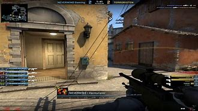
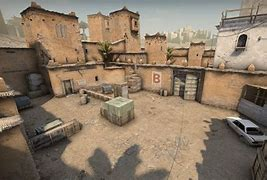
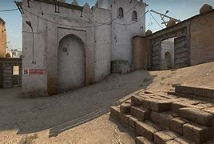
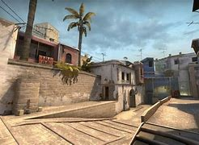
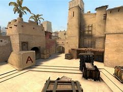

Counter-Strike Global Offensive
Counter-Strike: Global Offensive (CS:GO) – wieloosobowa strzelanka pierwszoosobowa, stworzona oraz wydana przez Valve Corporation i Hidden Path Entertainment
, które już wcześniej pracowały nad Counter-Strike: Source. Jest to czwarta gra z serii Counter-Strike, wydana na platformy Microsoft Windows, macOS, Xbox 360 i PlayStation 3 21 sierpnia 2012 i na Linuxa 23 września 2014. W grze do walki stają dwie drużyny: terroryści i antyterroryści. Zadaniem każdej z nich jest eliminacja drużyny przeciwnej lub wykonanie określonego zadania. W przypadku terrorystów jest to podłożenie bomby lub przetrzymywanie zakładników, zaś w przypadku antyterrorystów ochrona strefy detonacji przed podłożeniem bomby lub uratowanie zakładników. W grze występuje wiele różnych trybów, z których każdy ma odrębne cechy charakterystyczne.CS:GO oprócz wbudowanego systemu matchmakingu, pozwalającego graczom na rozgrywkę na dedykowanych serwerach Valve, ma również możliwość tworzenia i rozgrywki na serwerach społeczności z niestandardowymi mapami i trybami gry. Od momentu wydania, CS:GO jest jedną z najpopularniejszych strzelanek pierwszoosobowych rozgrywanych w ramach sportu elektronicznego. Najważniejszymi turniejami są tzw. „majory”, zawody sponsorowane przez wydawcę gry, Valve. Oficjalna strona na steam Cs:go
